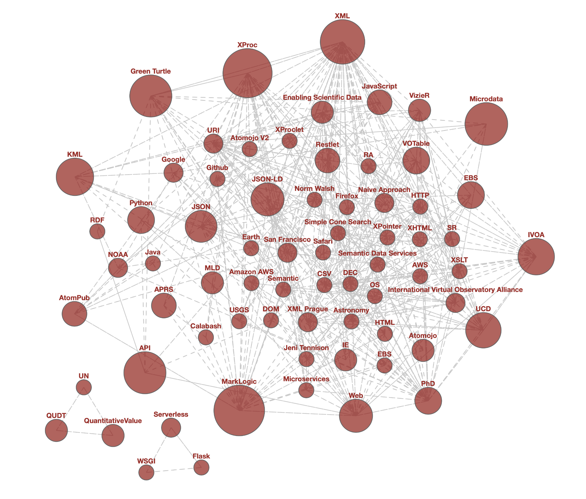
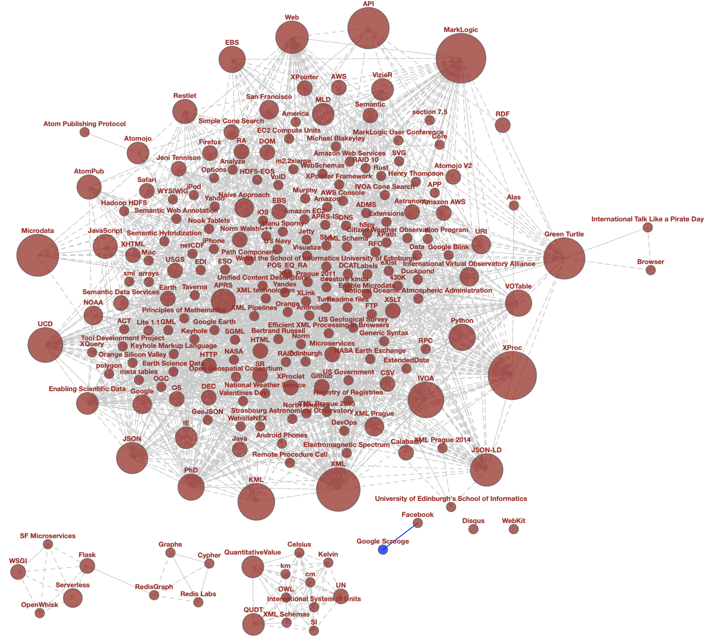

As an experiment, I wanted to extract various significant "keywords" from my blog posts and compare them to the curated terms I have tagged over the years. This is a kind of NLP task called Named Entity Recognition where various terms are identified by their part of speech and role within the sentences. A subsequent task is to resolve various forms of duplication, plurals, or other variations of the same task (e.g., Entity Resolution).
Fortunately for me, the python spaCy library has a very useful API and provides a particularly great pre-trained language model (e.g., en_core_web_sm for English language text). Installation of the model is straightforward and use is simple: you just tell spacy to load the model with a single line of code which returns a function that you can apply to the text you would like to analyze.
For example, first we install spaCy and download the model:
pip install spacy
python -m spacy download en_core_web_sm
We can create a simple program that will print the entities found:
import spacy
nlp = spacy.load("en_core_web_sm")
def print_entities(text):
doc = nlp(text)
for entity in doc.ents:
print(entity.text + ' : '+entity.label_)
Next, we can process the preceding paragraphs by the following invocation:
print_entities("""
As an experiment, I wanted to extract various significant "keywords" from my
blog posts and compare them to the curated terms I have tagged over the years.
This kind of NLP task where various terms are identified by their part of speech
and role within the sentences. Over the years, this process have evolved to
a specific task of Named Entity Recognition and the python spaCy
library has a very useful API and particularly great pre-trained language model
(e.g., en_core_web_sm for English language text).
The spaCy library is particular easy to use. You must first download the model
into your python environment. Once you have done so, you just tell spaCy to load
the model when you bootstrap the main "nlp" function. Afterwards, you apply this
function to the text you would like to analyze.
""")
The output should look like:
the years : DATE
NLP : ORG
the years : DATE
Named Entity Recognition : ORG
API : ORG
English : LANGUAGE
If we process the first part of the spaCy web page, we'll get:
API : ORG
the Ruby on Rails of Natural Language Processing : ORG
Cython : PERSON
2015 : DATE
FACTS & FIGURES : ORG
TensorFlow : ORG
PyTorch : ORG
Gensim : PERSON
Python : GPE
NLP : ORG
From the above output, we can see the entity text followed by the label. For the purpose of keyword extraction, some labels may not be interesting all by themselves (e.g. dates, ordinals, etc.). It is certainly not perfect (e.g., it doesn't recognize 'spaCy') but it does find some useful terms.
Note: The above example is available here.
While I have the source to my blog in a YAML + Markdown format that is easy to read programmatically, we can also just go to the website (or any URL) to analyze the text content. On my blog, the HTML article element is the main content of the page.
Fortunately, there is a nice Python library called pyquery that is very much like jquery. We can process a web page via the following code:
from pyquery import PyQuery as pq
doc = pq(url='https://www.milowski.com/')
doc('article[resource] p').text()
The text pulled from the web page is not perfect and neither is the model's ability to parse this text. As such, there are syntactic oddities that sometime make their way into entities. Also, sometimes stop words (e.g., 'the') prefix entities and the model will include them.
As such, there are various things I have found that need to be done with the results:
In some instances, the solution to the above are rather trivial post processing. For others, such as plural forms, it is often hard to understand, without use of some ontology, whether a plural form is the correct form (e.g., Kubernetes is always plural).
An interesting graph to generate is the co-occurrence of two entities. Generating this graph is issue of counting a storing the uses of terms within a resource (e.g., a blog post) and then querying for their co-occurrence. Keeping track of which resource url uses what entity is essential.
We can create a simple graph with a node for the resource and node for each entity. An edge between these will indicate usage and a property on that edge for the use count.
For example, the resource https://www.milowski.com/journal/entry/2020-01-17T12:43:00-08:00/
contains the entities and counts:
Graphs : 1, {'NORP'}
Cypher : 1, {'PERSON'}
Redis Labs : 1, {'ORG'}
RedisGraph : 1, {'ORG'}
and we can turn this into the following Cypher:
MERGE (a:BlogPosting { url : 'https://www.milowski.com/journal/entry/2020-01-17T12:43:00-08:00/'})
MERGE (e0:Entity { text : 'Graphs'})
MERGE (a)-[u0:uses]->(e0)
SET u0.count = 1
MERGE (e1:Entity { text : 'Cypher'})
MERGE (a)-[u1:uses]->(e1)
SET u1.count = 1
MERGE (e2:Entity { text : 'Redis Labs'})
MERGE (a)-[u2:uses]->(e2)
SET u2.count = 1
MERGE (e3:Entity { text : 'RedisGraph'})
MERGE (a)-[u3:uses]->(e3)
SET u3.count = 1
Once we have inserted nodes and edges for every blog post, we can count the uses of an entity across all the blog posts:
MATCH (a:BlogPosting)-[u:uses]->(e:Entity) RETURN e.text, count(a), sum(u.count)
We can also find the co-occurrences of terms and compute various counts:
MATCH (e1:Entity)<-[u1:uses]-(a)-[u2:uses]->(e2:Entity)
WHERE e1 <> e2
RETURN e1.text, e2.text, count(a), sum(u1.count), sum(u2.count)
The full code example that does this is available here.
We can run the whole process and load the data into RedisGraph for analysis. RedisGraph provides an implementation of the Cypher query language and allows you to store property graphs along side other data structures in Redis.
You can start an instance of RedisGraph via docker:
docker run -p 6379:6379 redislabs/redisgraph:2.0.1
We can then run the analysis code on my website via this list of urls:
pip install redis redisgraph
cat urls.txt | python analyze.py --load --show-query
This will load the posts and entities into the database into a graph called test.
We can then run the Redis CLI against the instance and query:
docker run -it --rm redis redis-cli -h host.docker.internal
host.docker.internal:6379> graph.query test 'match (a:BlogPosting) return count(a)'
1) 1) "count(a)"
2) 1) 1) (integer) 46
3) 1) "Query internal execution time: 0.603200 milliseconds"
And we can list the co-occurrences ordered by count:
host.docker.internal:6379> graph.query test 'match (e1:Entity)<-[u1:uses]-(a)-[u2:uses]->(e2:Entity) where e1<>e2 return e1.text,e2.text,count(a) order by count(a) desc limit 5'
1) 1) "e1.text"
2) "e2.text"
3) "count(a)"
2) 1) 1) "XProc"
2) "MarkLogic"
3) (integer) 8
2) 1) "MarkLogic"
2) "XProc"
3) (integer) 8
3) 1) "Green Turtle"
2) "API"
3) (integer) 4
4) 1) "MarkLogic"
2) "XML"
3) (integer) 4
5) 1) "API"
2) "Green Turtle"
3) (integer) 4
3) 1) "Query internal execution time: 22.808400 milliseconds"
Using the co-occurrence data from the query result, we can visualize the connection between entities. For example, for entities found at least twice we have the following co-occurrence graph:
If you include all the entities detected, you get the following co-occurrence graph. My favourite discoveries are entities Google Scrooge and International Talk Like a Pirate Day.
Detecting and harvesting named entities within text can give you insights. In my particular case, I can see that my curated keywords are just not as good as the entities discovered by analyzing the text. Within these entities are hidden gems that I'll have to expose somehow on this website.